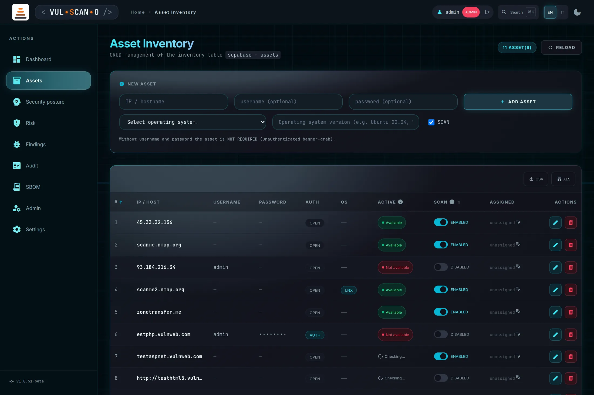
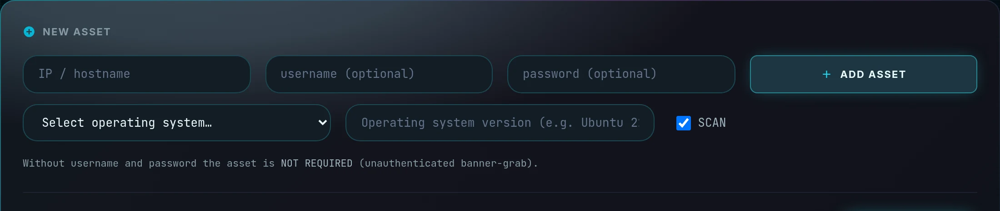
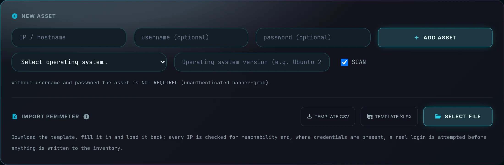
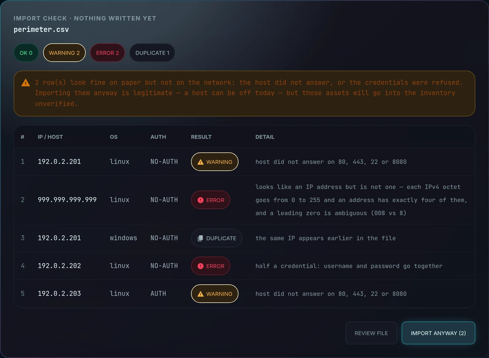
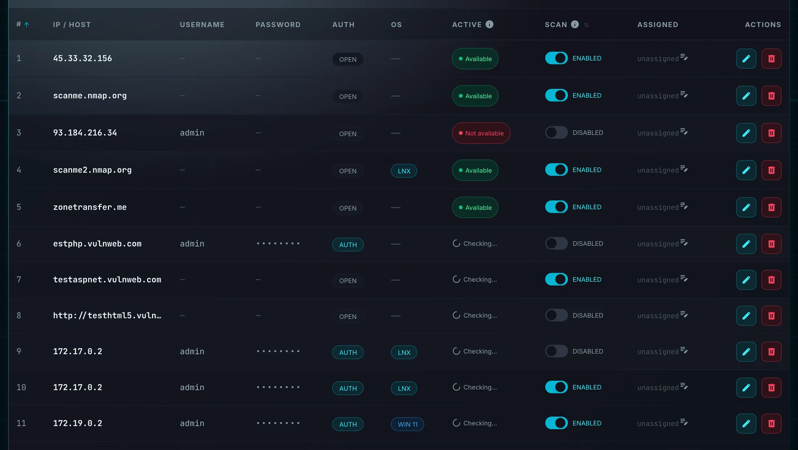
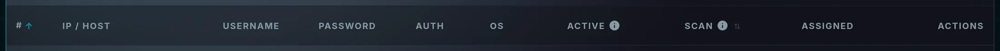
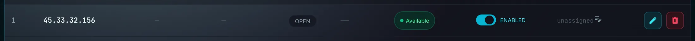
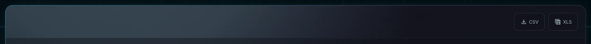
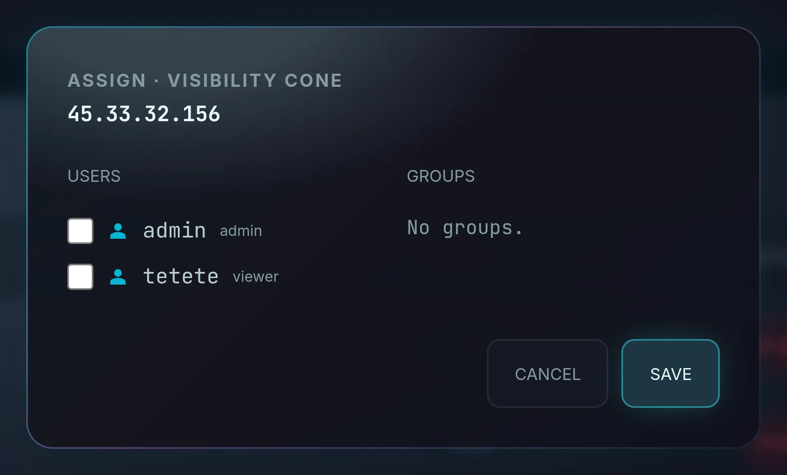

Asset InventoryInventario asset
The source of truth for everything the scanner touches. Every row is a host you are authorized to test, with its credentials, its operating system, its scan flag and — for administrators and managers — the set of people allowed to see it.
La fonte di verità per tutto ciò che lo scanner tocca. Ogni riga è un host che sei autorizzato a testare, con le sue credenziali, il sistema operativo, il flag di scansione e — per amministratori e manager — l'insieme delle persone autorizzate a vederlo.
Page OverviewPanoramica read: all · write: admin, manager, editor (in cone)lettura: tutti · scrittura: admin, manager, editor (nel cono)
Nothing gets scanned unless it is in this table, and the quality of every other page depends on the quality of what you put here. In particular the difference between an asset with working SSH credentials and one without is the difference between a full package inventory (hundreds of components, precise CVE matching, a real SBOM) and a single banner string.
Nulla viene scansionato se non è in questa tabella e la qualità di ogni altra pagina dipende dalla qualità di ciò che inserisci qui. In particolare, la differenza fra un asset con credenziali SSH funzionanti e uno senza è la differenza fra un inventario pacchetti completo (centinaia di componenti, matching CVE preciso, una SBOM reale) e una singola stringa di banner.
The inventory lives in the public.assets table on the local Supabase instance. Passwords are
encrypted with the encdec binary — AES-GCM under a secret prefix compiled into the binary itself —
on create and on edit, and stored as ENC:<hex>. The API never returns a password:
GET /api/assets/all exposes only the booleans has_password and
password_encrypted.
L'inventario risiede nella tabella public.assets dell'istanza Supabase locale. Le password vengono
cifrate con il binario encdec — AES-GCM con un prefisso segreto compilato nel binario stesso —
alla creazione e alla modifica, e salvate come ENC:<hex>. L'API non restituisce mai una
password: GET /api/assets/all espone solo i booleani has_password e
password_encrypted.
There are two ways in. The NEW ASSET form adds one host at a time and is the right tool for three of them; the perimeter import takes a CSV or XLSX file with fixed columns and is the right tool for eighty. They land in the same table and obey the same rules — the import simply checks, host by host, that what the file claims is actually out there before writing any of it.
Le strade d'ingresso sono due. Il form NEW ASSET aggiunge un host alla volta ed è lo strumento giusto per tre; l'import del perimetro accetta un file CSV o XLSX a colonne prefissate ed è lo strumento giusto per ottanta. Finiscono nella stessa tabella e rispettano le stesse regole — l'import si limita a verificare, host per host, che quel che il file dichiara esista davvero prima di scriverne una riga.

NEW ASSET panelPannello NEW ASSET

Features BreakdownDettaglio funzionalità
| FieldCampo | RequiredObbligatorio | BehaviourComportamento |
|---|---|---|
| IP / hostname | yessì |
The target host. URLs are normalised on the way in — scheme and path are stripped, so https://example.com/app becomes example.com. Both IPv4 addresses and DNS names are accepted.
L'host di destinazione. Le URL vengono normalizzate in ingresso — schema e percorso vengono rimossi, quindi https://example.com/app diventa example.com. Sono accettati sia indirizzi IPv4 sia nomi DNS.
|
| username | nono | The SSH account used for authenticated scanning. Left empty, the asset is scanned unauthenticated and its AUTH column shows OPEN. L'account SSH usato per la scansione autenticata. Se lasciato vuoto, l'asset viene scansionato senza autenticazione e la colonna AUTH mostra OPEN. |
| password | nono | Encrypted immediately on save and never echoed back by any endpoint. In the table it is rendered as a row of dots — the value itself is not retrievable through the web interface at all. Cifrata immediatamente al salvataggio e mai restituita da alcun endpoint. In tabella è resa come una fila di puntini — il valore non è affatto recuperabile tramite l'interfaccia web. |
| Operating systemSistema operativo | yessì |
linux or windows. This is not cosmetic: it decides the inventory strategy — dpkg/rpm on Linux, winget plus the Uninstall registry through PowerShell on Windows. Submitting without it raises “Please choose an operating system — it decides how the asset is scanned”.
linux o windows. Non è un dettaglio estetico: determina la strategia di inventario — dpkg/rpm su Linux, winget più il registro Uninstall via PowerShell su Windows. Inviando senza sceglierlo compare «Please choose an operating system — it decides how the asset is scanned».
|
| OS versionVersione OS | nono |
Free text — Ubuntu 22.04, Windows 11, CentOS 7. It feeds the OS distribution chart and version table in /intel.
Testo libero — Ubuntu 22.04, Windows 11, CentOS 7. Alimenta il grafico della distribuzione OS e la tabella delle versioni in /intel.
|
| ADD ASSET | — |
POST /api/assets. An editor creating an asset gets it auto-assigned to themselves (or to one of their groups), so an editor can never create an asset outside their own visibility cone.
POST /api/assets. Un editor che crea un asset se lo vede auto-assegnato (o assegnato a un suo gruppo), quindi un editor non può mai creare un asset fuori dal proprio cono di visibilità.
|
| Help lineRiga di aiuto | — | “Without username and password the asset is NOT REQUIRED (unauthenticated banner-grab).”«Without username and password the asset is NOT REQUIRED (unauthenticated banner-grab).» |
Perimeter import (CSV / XLSX)Import del perimetro (CSV / XLSX) admin · manager · editor

Adding a perimeter one row at a time is fine for three assets and unworkable for eighty. The import takes a CSV or XLSX file with fixed columns and turns it into inventory rows — but not before checking, host by host, that what the file claims is actually out there. Aggiungere un perimetro una riga alla volta va bene per tre asset ed è impraticabile per ottanta. L'import accetta un file CSV o XLSX a colonne prefissate e lo trasforma in righe di inventario — ma non prima di aver verificato, host per host, che quel che il file dichiara esista davvero.
The templateIl modello
TEMPLATE CSV and TEMPLATE XLSX download
the same file in two formats, already filled with two example rows: one authenticated asset
and one without credentials, the two ways an asset can be censused. The example IPs are in
192.0.2.0/24 — the documentation range of RFC 5737, which is not routable: an example imported
by distraction cannot put someone else's host under scan. The column list comes from the server
(GET /api/assets/import/template), so the template you fill in and the validator that judges it
can never drift apart.
MODELLO CSV e MODELLO XLSX scaricano lo
stesso file in due formati, già compilato con due righe di esempio: un asset autenticato e
uno senza credenziali, i due modi in cui un asset si censisce. Gli IP di esempio stanno in
192.0.2.0/24 — la rete di documentazione della RFC 5737, non instradabile: un esempio importato
per distrazione non può mettere in scansione l'host di qualcun altro. L'elenco delle colonne arriva dal
server (GET /api/assets/import/template), così il modello che compili e il validatore che lo
giudica non possono divergere.
| ColumnColonna | RequiredObbligatoria | Accepted valuesValori ammessi |
|---|---|---|
ip |
yessì | IPv4/IPv6 address or DNS name. An address that does not parse is an error, never a warning — see below.Indirizzo IPv4/IPv6 o nome DNS. Un indirizzo che non è tale è un errore, mai un avviso — vedi sotto. |
username · password |
nono | Either both or neither. Half a credential is an error, not a blank: the asset would enter as unauthenticated and the deep scan you expect would never run. The password travels in clear inside the file — it is encrypted the moment it is stored and is never echoed back. O entrambi o nessuno dei due. Mezza credenziale è un errore, non un vuoto: l'asset entrerebbe come non autenticato e la scansione profonda che ti aspetti non verrebbe mai fatta. La password viaggia in chiaro dentro il file — viene cifrata nel momento in cui è memorizzata e non torna mai indietro. |
os_type |
yessì | linux · windows |
os_major_version |
nono | Free text — Ubuntu 22.04, Windows 11.Testo libero — Ubuntu 22.04, Windows 11. |
enabled · internet_facing |
nono | yes / no. Empty means yes for enabled, no for internet_facing.yes / no. Vuoto significa yes per enabled, no per internet_facing. |
environment |
nono | production · staging · dev · unknown |
criticality |
nono |
1 to 5. Together with environment and internet_facing it drives contextual risk in /risk: an import that dropped these would land every asset as unknown.
Da 1 a 5. Insieme a environment e internet_facing guida il rischio contestuale in /risk: un import che le perdesse farebbe arrivare ogni asset come unknown.
|
The check before the writeLa verifica prima della scrittura

Choosing a file does not import it. The rows are read in the browser and sent to
POST /api/assets/import/preflight, which — for every row that would actually be importable —
opens a TCP probe on ports 80, 443, 22 and 8080 and, when the row carries a complete
credential, attempts a real SSH login. No login is attempted towards a host that did not
answer: the outcome would be a foregone failure and would speak about the host, not about the
credential.
Scegliere un file non lo importa. Le righe vengono lette nel browser e inviate a
POST /api/assets/import/preflight, che — per ogni riga davvero importabile — apre una
sonda TCP sulle porte 80, 443, 22 e 8080 e, quando la riga porta una credenziale intera,
tenta un login SSH reale. Verso un host che non ha risposto non si tenta alcun login:
l'esito sarebbe un fallimento scontato e parlerebbe dell'host, non della credenziale.
| VerdictEsito | MeaningSignificato | Does it get imported?Viene importata? |
|---|---|---|
| OK | Valid data, host answered, credentials accepted where present.Dato valido, host che risponde, credenziali accettate dove presenti. | Yes.Sì. |
| WARNING |
The row is fine on paper but not on the network: silent host, refused credentials, or a host key missing from known_hosts — the last one is a refusal made by us, not by the host, and is named as such.
La riga è corretta sulla carta ma non in rete: host muto, credenziali rifiutate, oppure host key assente dai known_hosts — quest'ultimo è un rifiuto fatto da noi, non dall'host, ed è detto per quello che è.
|
Only on explicit confirmation — IMPORT ANYWAY. A host can legitimately be switched off today; the choice is the operator's, and it is recorded as an override. Solo su conferma esplicita — IMPORTA COMUNQUE. Un host può legittimamente essere spento oggi; la scelta è dell'operatore, e viene registrata come tale. |
| ERROR |
Malformed data: missing or invalid IP, unknown OS, half a credential, criticality out of range. An address written wrong lands here too — 999.999.999.999, 192.0.2.300, 192.0.2, 008.8.8.8 — and not among the warnings: DNS labels are allowed to be numeric, so without an explicit rule such a string would pass as a "valid name", get probed, obviously not answer, and reach you as a banal host is off warning. Confirm that, and an asset that can never be scanned enters the inventory. RFC 1123 §2.1 forbids exactly this, requiring a hostname's rightmost label not to be all-numeric.
Dato malformato: IP assente o non valido, SO sconosciuto, mezza credenziale, criticality fuori scala. Ci finisce anche un indirizzo scritto male — 999.999.999.999, 192.0.2.300, 192.0.2, 008.8.8.8 — e non fra gli avvisi: le etichette DNS possono essere numeriche, quindi senza una regola esplicita una stringa così passerebbe come «nome valido», verrebbe messa in sonda, ovviamente non risponderebbe e ti arriverebbe come un banale avviso di host spento. Confermi, e in inventario entra un asset che non potrà mai essere scansionato. La RFC 1123 §2.1 vieta esattamente questo, richiedendo che l'etichetta più a destra di un hostname non sia tutta numerica.
|
Never — no confirmation makes an IP that does not exist valid. The other rows are imported anyway: a hand-filled sheet almost always has one crooked row, and losing the whole import over a comma would be worse.Mai — nessuna conferma rende valido un IP che non esiste. Le altre righe vengono importate lo stesso: un foglio compilato a mano ha quasi sempre una riga storta, e perdere l'intero import per una virgola sarebbe peggio. |
| DUPLICATE | The same IP appears earlier in the file, or is already in the inventory.Lo stesso IP compare prima nel file, oppure è già in inventario. | No. Two rows with the same IP are not a richer import, they are an inventory counting the same host twice. The inventory check ignores the visibility cone, so an editor cannot create a duplicate of an asset they cannot see.No. Due righe con lo stesso IP non sono un import più ricco, sono un inventario che conta due volte lo stesso host. Il controllo sull'inventario ignora il cono di visibilità, così un editor non può creare il duplicato di un asset che non vede. |
When there are no warnings, the probes are run again at write
time: the verdict you were shown is information, not a pass the browser can replay. When you do confirm the
warnings, the probes are skipped — you have already decided — and the override is written to the activity
ledger as asset.import with acknowledged_warnings: true. The check itself is
recorded too (asset.import_preflight): probing third-party hosts with credentials supplied by
whoever uploads the file is exactly the activity a ledger has to be able to reconstruct.
Quando non ci sono avvisi, le sonde vengono rifatte al
momento della scrittura: l'esito che ti è stato mostrato è un'informazione, non un lasciapassare che il
browser può rigiocare. Quando invece confermi gli avvisi le sonde si saltano — hai già deciso — e lo
scavalcamento finisce nel registro attività come asset.import con
acknowledged_warnings: true. Anche la sola verifica lascia traccia
(asset.import_preflight): sondare host di terzi con credenziali fornite da chi carica il file è
esattamente l'attività che un registro deve poter ricostruire.
How It Works — import a perimeterCome funziona — importare un perimetro
- Press TEMPLATE CSV or TEMPLATE XLSX and open the downloaded file.Premi MODELLO CSV o MODELLO XLSX e apri il file scaricato.
- Replace the two example rows with your own — do not import the examples. Keep the header row exactly as it is: the column names are the contract.Sostituisci le due righe di esempio con le tue — non importare gli esempi. Lascia la riga di intestazione esattamente com'è: i nomi delle colonne sono il contratto.
- Press SELECT FILE and choose it. The check starts immediately; on a large file it takes a few seconds, because it is actually knocking on every host.Premi SCEGLI FILE e selezionalo. La verifica parte subito; su un file grande richiede qualche secondo, perché sta davvero bussando a ogni host.
- Read the verdict. If everything is OK, press IMPORT.Leggi l'esito. Se è tutto OK, premi IMPORTA.
- If there are warnings, choose: REVIEW FILE closes without writing anything, so you can fix the sheet and load it again; IMPORT ANYWAY writes the flagged rows too, unverified and on the record.Se ci sono avvisi, scegli: RIVEDI IL FILE chiude senza scrivere nulla, così puoi correggere il foglio e ricaricarlo; IMPORTA COMUNQUE scrive anche le righe segnalate, non verificate e messe a verbale.
- The inventory reloads. Check the ACTIVE column: it repeats the same reachability verdict live, row by row.L'inventario si ricarica. Controlla la colonna ACTIVE: ripete lo stesso esito di raggiungibilità dal vivo, riga per riga.
The inventory tableLa tabella dell'inventario


Features BreakdownDettaglio funzionalità
| ColumnColonna | ContentContenuto | InteractionInterazione |
|---|---|---|
| # | The asset index used by the REST API in /api/assets/{index}.L'indice dell'asset usato dall'API REST in /api/assets/{index}. |
Sortable.Ordinabile. |
| IP / HOST | The normalised host string; long values are truncated with an ellipsis.La stringa host normalizzata; i valori lunghi sono troncati con i puntini. | Editable through EDIT.Modificabile con EDIT. |
| USERNAME | The SSH account, or a dash.L'account SSH, oppure un trattino. | Redacted for the read-only roles (auditor, viewer, stakeholder) — they see the asset but not who logs into it. None of them can operate on the host, so none of them needs the account name.Oscurata per i ruoli di sola lettura (auditor, viewer, stakeholder) — vedono l'asset ma non chi vi accede. Nessuno di loro può operare sull'host, quindi nessuno di loro ha bisogno del nome dell'account. |
| PASSWORD | Never the value — only a state: a row of dots when a password is stored, a dash when none is, and an orange NOT ENCRYPTED badge when a legacy plaintext password is still present. Mai il valore — solo uno stato: una fila di puntini quando una password è memorizzata, un trattino quando non c'è e un badge arancione NOT ENCRYPTED quando è ancora presente una password legacy in chiaro. | Re-saving the asset with a password re-encrypts it and clears the warning.Risalvare l'asset con una password la ricifra e rimuove l'avviso. |
| AUTH | AUTH when credentials exist, OPEN when they do not.AUTH quando esistono credenziali, OPEN quando non ci sono. | Derived, not editable.Derivata, non modificabile. |
| OS | A compact badge — LNX or WIN 11 — showing the OS type and, when provided, the major version.Un badge compatto — LNX o WIN 11 — che mostra il tipo di OS e, se fornita, la versione principale. | Editable.Modificabile. |
| ACTIVE | The live health state — see the next section.Lo stato di salute live — vedi la sezione seguente. | Recomputed on every page load.Ricalcolato a ogni caricamento della pagina. |
| SCAN | A toggle reading ENABLED or DISABLED.Un interruttore che riporta ENABLED o DISABLED. |
PATCH /api/assets/{id}/enabled. A disabled asset stays in the inventory but is skipped by both the vulnerability scan and the posture scan, and is counted in the Dashboard's “excluded from scans” line. Confirmations: “Asset enabled for scans” / “Asset disabled for scans”; failure: “Toggle error”.
PATCH /api/assets/{id}/enabled. Un asset disabilitato resta in inventario ma viene saltato da entrambe le scansioni, di vulnerabilità e di postura, ed è conteggiato nella riga «excluded from scans» della Dashboard. Conferme: «Asset enabled for scans» / «Asset disabled for scans»; errore: «Toggle error».
|
| ASSIGNED | Chips for the assigned users and groups, or the word unassigned.Chip per utenti e gruppi assegnati, oppure la parola unassigned. | Administrators and managers open the assignment panel from here; editors see read-only.Amministratori e manager aprono da qui il pannello di assegnazione; gli editor vedono read-only. |
| ACTIONS | Two icon buttons: edit (cyan pencil) and delete (red bin).Due pulsanti icona: modifica (matita ciano) ed elimina (cestino rosso). |
PUT /api/assets/{id} and DELETE /api/assets/{id}. Deletion asks first: “Delete asset "{ip}" from inventory?”
PUT /api/assets/{id} e DELETE /api/assets/{id}. L'eliminazione chiede conferma: «Delete asset "{ip}" from inventory?»
|

The ACTIVE column — live health checkLa colonna ACTIVE — health check live
Page OverviewPanoramica
Every time this page loads, the application probes each asset and reports what it found. The tooltip on the column header states the method plainly: it attempts a TCP connection to the common ports 80, 443, 22 and 8080. If the host answers it is Available; if not, Not available. This is a reachability test, not a port scan, and it runs again on every reload.
Ogni volta che questa pagina si carica, l'applicazione sonda ciascun asset e riporta ciò che ha trovato. Il tooltip sull'intestazione della colonna dichiara il metodo con chiarezza: tenta una connessione TCP alle porte comuni 80, 443, 22 e 8080. Se l'host risponde è Available; altrimenti Not available. È un test di raggiungibilità, non una scansione di porte, e viene rieseguito a ogni ricaricamento.
Features Breakdown — the four statesDettaglio funzionalità — i quattro stati
| BadgeBadge | ConditionCondizione | What the next scan will collectCosa raccoglierà la prossima scansione |
|---|---|---|
| NOT AVAILABLE | The host did not answer on any probed TCP port.L'host non ha risposto su nessuna porta TCP sondata. | Nothing.Nulla. |
| AVAILABLE | Reachable, and no credentials are stored on the asset.Raggiungibile e senza credenziali salvate sull'asset. | Banner data only — a service string, sometimes a version.Solo dati di banner — una stringa di servizio, a volte una versione. |
| SSH OK | Reachable and the SSH login succeeded using the password decrypted by encdec.Raggiungibile e login SSH riuscito usando la password decifrata da encdec. |
The full installed package inventory — the good case.L'inventario completo dei pacchetti installati — il caso buono. |
| SSH FAIL | Reachable, but the login failed — wrong credentials, a refused host key, or a password that is not encrypted.Raggiungibile, ma il login è fallito — credenziali errate, chiave host rifiutata, oppure una password non cifrata. | Banner data only, plus a warning you should act on.Solo dati di banner, più un avviso su cui intervenire. |
| Checking…Checking… | The probe is still in flight.La sonda è ancora in corso. | — |
encdec: if the stored password is not
encrypted (no ENC: prefix) the outcome is automatically SSH FAIL, by design. Second, the SSH host
key policy is RejectPolicy — unknown host keys are refused rather than auto-accepted, which is
the safe behaviour but does mean a brand-new host needs its key known first.
Due dettagli spiegano la maggior parte dei risultati SSH FAIL. Primo:
il login dell'health check usa la password decifrata da encdec; se la password memorizzata
non è cifrata (manca il prefisso ENC:) l'esito è automaticamente SSH FAIL, per scelta
progettuale. Secondo: la policy sulle chiavi host SSH è RejectPolicy — le chiavi sconosciute
vengono rifiutate invece che accettate automaticamente, comportamento sicuro che però richiede di conoscere
in anticipo la chiave di un host nuovo.
Toolbar, export and paginationBarra strumenti, export e paginazione

| ControlControllo | BehaviourComportamento |
|---|---|
| {n} ASSET(S) | Live row count, updated after filtering, creation and deletion.Conteggio righe live, aggiornato dopo filtri, creazioni ed eliminazioni. |
| RELOAD | Re-reads the inventory and re-runs every health check — the way to refresh the ACTIVE column after fixing credentials.Rilegge l'inventario e riesegue tutti gli health check — il modo per aggiornare la colonna ACTIVE dopo aver corretto le credenziali. |
| CSV / XLS | Download the current table. Passwords are never included in either format.Scaricano la tabella corrente. Le password non sono mai incluse in nessuno dei due formati. |
| PagerPaginatore | Client-side pagination, so a few hundred assets stay usable.Paginazione lato client, così anche qualche centinaio di asset resta gestibile. |
| Empty stateStato vuoto | “Inventory empty. Add the first asset.”«Inventory empty. Add the first asset.» |
| Toast | Asset added · Asset updated · Asset deleted · Assignments updated, with the matching failures Create error, Update error, Delete error, Inventory load failed.Asset added · Asset updated · Asset deleted · Assignments updated, con i corrispondenti errori Create error, Update error, Delete error, Inventory load failed. |
ASSIGN · VISIBILITY CONEASSIGN · CONO DI VISIBILITÀ admin · manager

Page OverviewPanoramica
This panel is where multi-team separation actually happens. An editor sees an asset if it is assigned to them directly or to a group they belong to. Everything else in the product follows from that single decision: their /risk score, their /findings queue, their /sbom export and their /audit history are all recomputed over exactly this set.
È in questo pannello che la separazione fra team avviene davvero. Un editor vede un asset se è assegnato direttamente a lui oppure a un gruppo di cui fa parte. Tutto il resto del prodotto discende da questa singola decisione: il suo score in /risk, la sua coda in /findings, il suo export in /sbom e il suo storico in /audit sono tutti ricalcolati esattamente su questo insieme.
Features BreakdownDettaglio funzionalità
| ControlControllo | BehaviourComportamento |
|---|---|
| USERS | A checkbox per user. Empty state: “No users.”Una casella per utente. Stato vuoto: «No users.» |
| GROUPS | A checkbox per group; every member of a ticked group inherits access. Groups are managed in /admin. Empty state: “No groups.”Una casella per gruppo; ogni membro di un gruppo spuntato eredita l'accesso. I gruppi si gestiscono in /admin. Stato vuoto: «No groups.» |
| SAVE | PUT /api/assets/{id}/assignments → “Assignments updated”; on failure “Assignment update failed”. If the user and group lists cannot be loaded at all: “Failed to load users/groups”.PUT /api/assets/{id}/assignments → «Assignments updated»; in caso di errore «Assignment update failed». Se gli elenchi di utenti e gruppi non si caricano affatto: «Failed to load users/groups». |
| CANCEL | Closes without writing anything.Chiude senza scrivere nulla. |
403 on
PUT /api/assets/{id}/assignments for editors regardless of what the interface shows.
Gli editor non possono modificare le assegnazioni. È una prevenzione voluta
dell'auto-escalation: un editor che potesse modificare il cono potrebbe allargarlo. Il server restituisce
403 su PUT /api/assets/{id}/assignments per gli editor, indipendentemente da ciò che
mostra l'interfaccia.
Procedures and expected outcomesProcedure e risultati attesi
How It Works — add and verify an assetCome funziona — aggiungere e verificare un asset
- Fill IP / hostname.Compila IP / hostname.
- For an authenticated scan — strongly recommended, because banner grabbing sees very little — add the SSH username and password.Per una scansione autenticata — fortemente consigliata, perché il banner grabbing vede pochissimo — aggiungi username e password SSH.
- Pick the operating system. This is mandatory and determines how packages are enumerated.Scegli il sistema operativo. È obbligatorio e determina come vengono enumerati i pacchetti.
- Optionally type the OS version, e.g.
Ubuntu 22.04.Facoltativamente digita la versione OS, es.Ubuntu 22.04. - Press ADD ASSET. The row appears with the password already encrypted.Premi ADD ASSET. La riga compare con la password già cifrata.
- Watch the ACTIVE column resolve from Checking… to a final state.Osserva la colonna ACTIVE passare da Checking… a uno stato definitivo.
- If it reads SSH FAIL: verify the credentials, confirm there is no NOT ENCRYPTED badge, and check that simulation is off in Settings.Se riporta SSH FAIL: verifica le credenziali, controlla che non ci sia il badge NOT ENCRYPTED e assicurati che la simulazione sia disattivata nelle Impostazioni.
How It Works — assign a visibility coneCome funziona — assegnare un cono di visibilità
- Sign in as admin or manager.Accedi come admin o manager.
- Click the ASSIGNED cell of the target asset.Clicca la cella ASSIGNED dell'asset desiderato.
- Tick the users and/or groups that must see it. Prefer groups — membership changes then propagate without touching any asset.Spunta gli utenti e/o i gruppi che devono vederlo. Preferisci i gruppi — i cambi di appartenenza si propagano poi senza toccare alcun asset.
- Press SAVE.Premi SAVE.
- Verify by signing in as one of those editors: the asset appears in their /assets, and their /risk, /findings, /sbom and /audit figures now include it.Verifica accedendo come uno di quegli editor: l'asset compare nel suo /assets e i suoi numeri in /risk, /findings, /sbom e /audit ora lo includono.